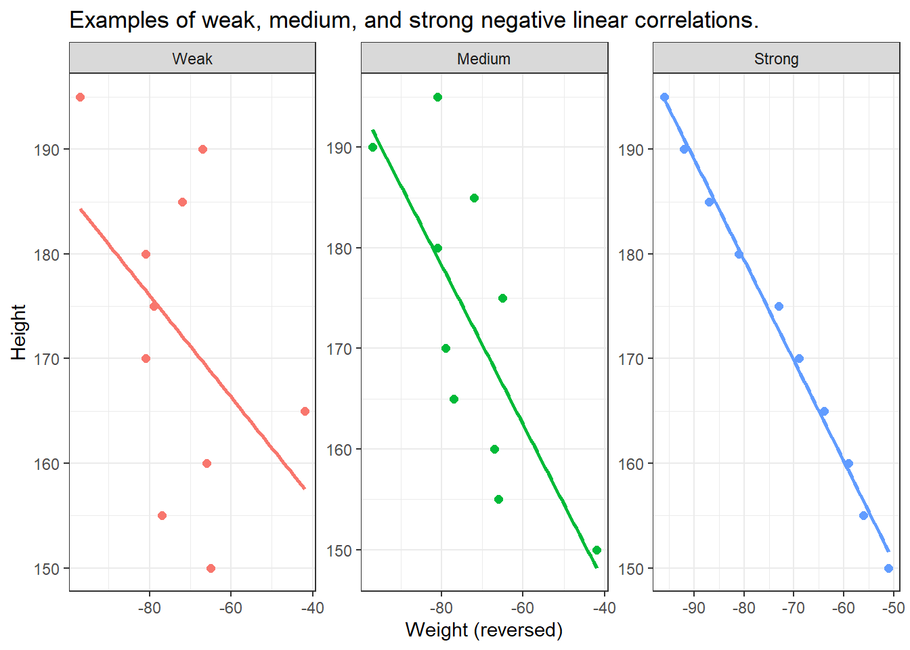
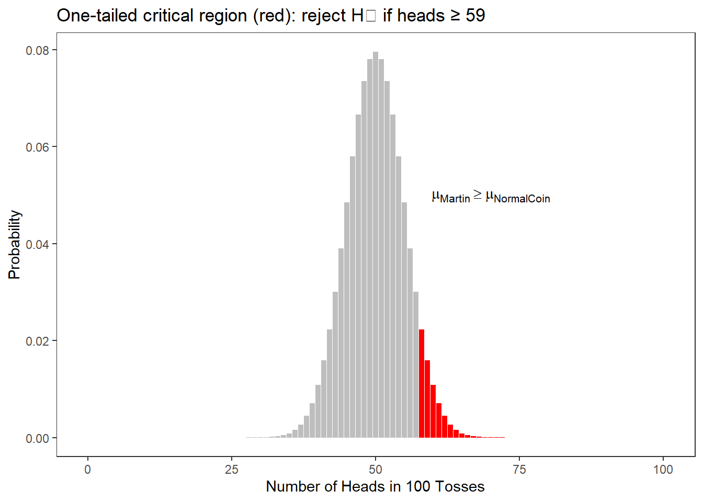
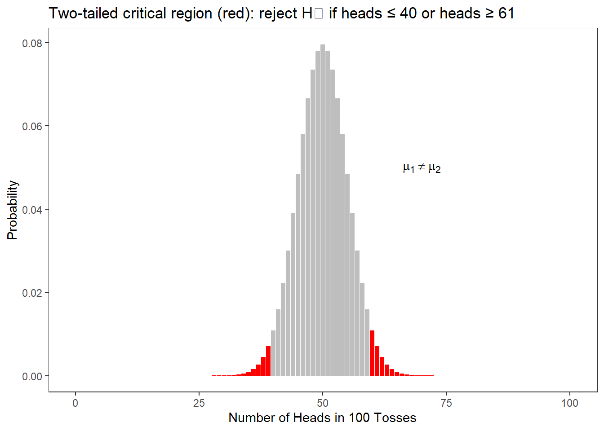
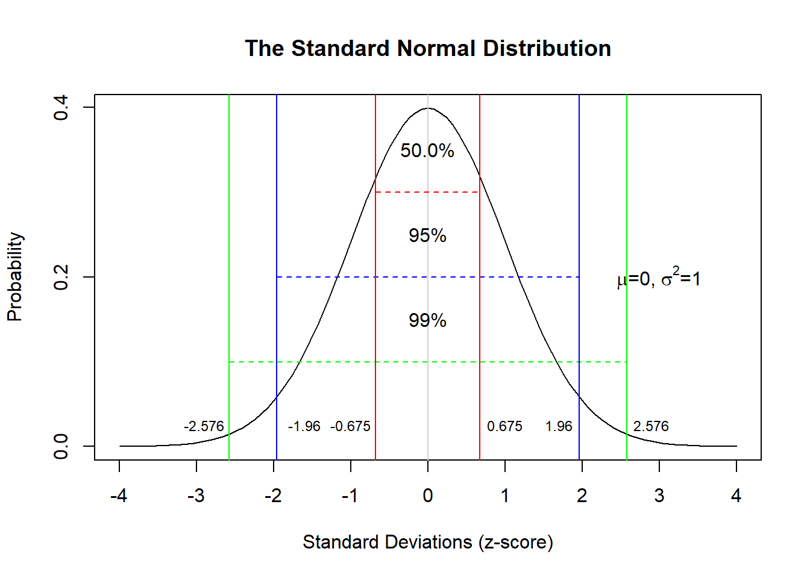
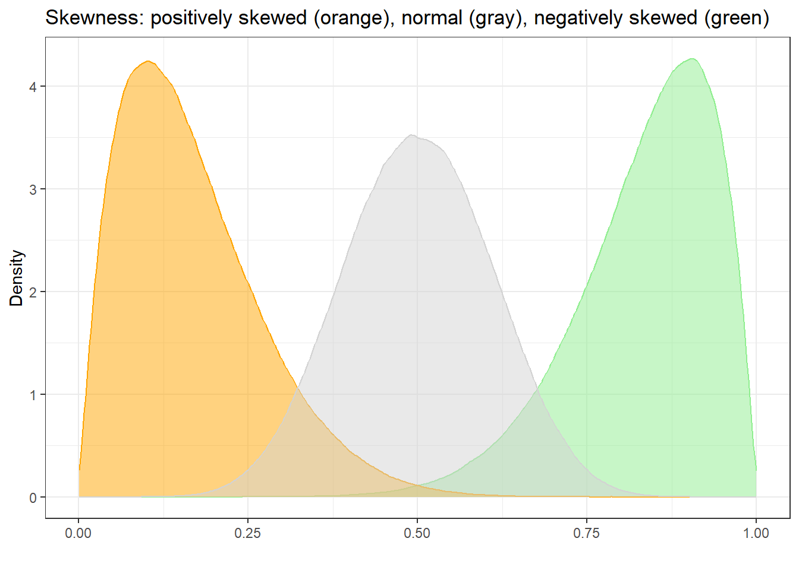
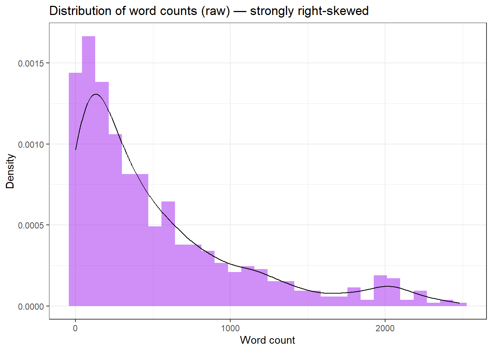
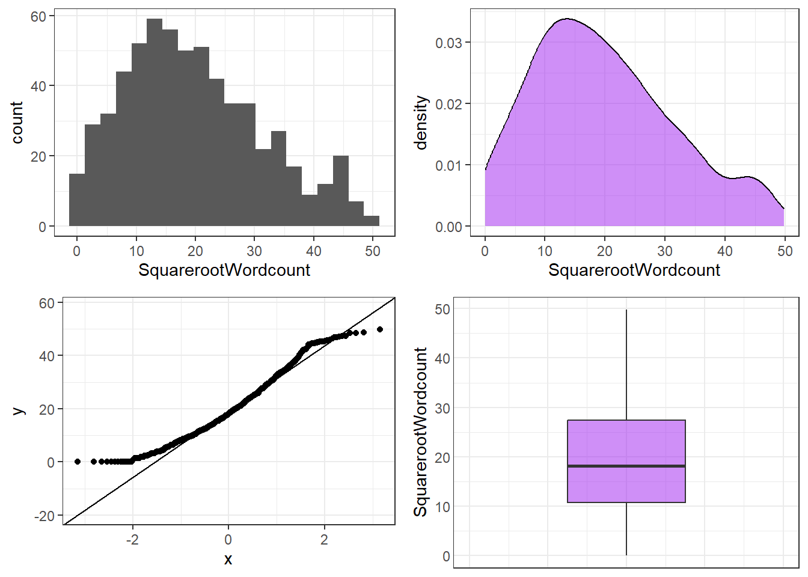

Basic Concepts in Quantitative Research
This tutorial introduces fundamental concepts in quantitative research, including variables, observations, measurements, and the distinction between descriptive and inferential statistics. It is aimed at complete beginners in linguistics and the social sciences and serves as a conceptual foundation for all subsequent statistical tutorials in LADAL.

Welcome!
What You’ll Learn
By the end of this tutorial, you will understand:
- What statistics is: The purpose and scope of quantitative methods
- Hypotheses: How to formulate, classify, and test them
- Research designs: How to choose the right design for your question
- Variables: Types, scales, and operationalisation
- Relationships: Correlations, their strength, and direction
- Probability & significance: How p-values and hypothesis testing work
- Distributions: Normal, binomial, skewness, and kurtosis
- Errors: Alpha, beta, and corrections for multiple testing
- Transformations: How to handle non-normal data
- Bayes’ Theorem: Updating beliefs with evidence
Essential for
Empirical research · Statistical reasoning · Critical evaluation of findings · Research design
Who This Tutorial is For
This tutorial is designed for anyone who works with data or reads empirical research:
- 🎓 Students – Beginning training in quantitative methods
- 🔬 Researchers – Building solid methodological foundations
- 📊 Analysts – Understanding the logic behind statistical decisions
- 👨🏫 Educators – Teaching research methods
- 📖 Critical readers – Evaluating published findings
No prior statistical knowledge required — we start from first principles and build systematically.
How to Use This Tutorial
This tutorial is designed to be read sequentially. Each section builds on the previous one. Exercise boxes appear throughout — engage with them before reading the answers, as working through the problems actively is the fastest route to genuine understanding.
Running Example: English Comparative Constructions
Throughout this tutorial, we use a single running linguistic example — the choice between prouder and more proud in English — to ground abstract concepts in a concrete, real-world research scenario. Whenever you see this box, we are connecting a new concept back to this example.
Part 1: What is Statistics and Why Does it Matter?
What Is Statistics?
Perhaps the most fundamental questions in empirical research are: What is statistics? and Why should I use it?
A simple answer to the first question is that statistics is a principled way of learning about the world using numbers. More precisely, statistics comprises methods that perform quantitative analyses — analyses that use numeric information to understand empirical phenomena. Quantitative analyses are central to the scientific enterprise, which I use here broadly to refer to any approach that uses the scientific method to gain a reliable understanding of the world.
The answer to why we use statistics is less trivial, but we can identify three core purposes:
The Three Purposes of Statistics
(a) Descriptive statistics — to summarise data
What does my data look like? What is typical? How spread out are the values?
(b) Exploratory statistics — to explore patterns in data
Are there unexpected patterns? What relationships seem worth investigating further?
(c) Inferential statistics — to draw conclusions about relationships
Does X influence Y? Can I generalise from my sample to a broader population?
A more practical way to think about it: statistics is a labour-saving device. It allows you to summarise complex datasets concisely, identify patterns that would be invisible to the naked eye, and communicate the strength of your findings in a way that others can evaluate and replicate.
Statistics and Science
Statistics does not exist in a vacuum — it is a tool in service of science. Science can be defined as a systematic enterprise that builds and organises knowledge in the form of testable explanations and predictions about the universe (Wilson 1999, 58).
The phrase testable explanations is doing enormous work in that definition. Another name for a testable explanation is a hypothesis. This means that, at its core, science is the methodological testing of hypotheses — and statistics is one of the primary tools we use to do that testing rigorously.
The Central Chain of Quantitative Research
Research Question
↓
Hypothesis
↓
Research Design
↓
Data Collection
↓
Statistical Analysis
↓
Conclusion
↓
New Questions... Every step in this chain involves decisions. The rest of this tutorial will give you the conceptual tools to make those decisions well.
Part 2: A Primer — The Running Example
English Comparative Constructions
Before introducing abstract concepts, it helps to have a concrete research problem. Throughout this tutorial, we will use a classic problem in English linguistics: how do speakers choose between the two comparative forms of adjectives?
In English, comparatives can be formed in two ways:
(1) Synthetic (morphological) strategy
proud → prouder
(2) Analytic (periphrastic) strategy
proud → more proud
As a general rule, one-syllable adjectives prefer the synthetic form (taller, faster, brighter) while adjectives with three or more syllables prefer the analytic form (more attractive, more intelligent, more comfortable). But two-syllable adjectives create a choice — and that choice is influenced by a range of factors that linguists have identified in the literature.
What Factors Influence the Choice?
A thorough review of the literature on English comparatives (see Gries (2009), pp. 27–30 for a model overview) reveals four key influencing factors:
Factor 1: Length of the Adjective
Shorter adjectives (one syllable) strongly prefer the morphological strategy; longer adjectives (three or more syllables) prefer the periphrastic strategy.
- cool → cooler (one syllable → synthetic)
- attractive → more attractive (three syllables → analytic)
Factor 2: Syntactic Function
Adjectives in attributive position (before the noun) prefer the morphological strategy; adjectives in predicative position (after a linking verb) prefer the periphrastic strategy.
- The prouder boy of the two was smiling. (attributive → synthetic preferred)
- The boy to the left was more proud. (predicative → analytic preferred)
Factor 3: Ending of the Adjective
Adjectives ending in -ly or -y prefer the morphological strategy (e.g., lovelier, friendlier).
Factor 4: Subsequent than
When a than-phrase follows the comparative, the morphological strategy is preferred.
- This joke is funnier than the other one.
Running Example → Research Goal
Now that we have identified potential influencing factors from the literature, our goal is to formulate a hypothesis about one or more of these factors and then test it against data. This is exactly the workflow of quantitative research — and the next section introduces the conceptual machinery that makes this possible.
Part 3: Hypotheses
What Is a Hypothesis?
Hypothesis testing is arguably the most important activity in empirical research. A proper scientific hypothesis is a statement about empirical reality — one that is formulated with sufficient precision that it can be tested against observations.
The core logic is this: we test a hypothesis by looking for observations that would contradict it. If we find a genuine counter-example, the hypothesis is falsified — proven incorrect. This is not a weakness of science; it is science’s greatest strength. Falsifiability is what distinguishes scientific claims from mere speculation.
The Apple Thought Experiment
Consider the hypothesis: Apples always fall down.
If we find a single apple that does not fall down, the hypothesis is falsified. But notice: we can easily imagine circumstances that would falsify this hypothesis (e.g., in a zero-gravity environment). That imaginability is what makes it a valid scientific hypothesis.
Now consider: Some things happen for a reason. Can you imagine any observation that would prove this false? If not, it is not a scientific hypothesis — it is a metaphysical claim.
Exercises: Falsifiability
Q1. The hypothesis “Apples always fall down” is falsified by an apple floating in space (zero gravity). What does this demonstrate?
Q2. How would you best revise the hypothesis “Apples always fall down” to handle the counterexample of zero gravity?
Q3. Which of the following would be the most appropriate hypothesis about adjective length and comparative formation in English?
Criteria for a Valid Scientific Hypothesis
A hypothesis is not simply any claim. To qualify as a scientific hypothesis, a statement must meet four criteria:
The Four Criteria of a Hypothesis
Falsifiable — It must be theoretically possible to prove it wrong. A hypothesis that is compatible with any possible observation tells us nothing.
Testable — We must be able to actually collect data that bears on the hypothesis. (Falsifiability is a logical criterion; testability is a practical one.)
Unambiguous — The statement must have a clear, single interpretation. Vague or modal language (e.g., might, could) undermines this.
Internally consistent — The hypothesis must not contradict itself.
Note that universality (applying to all cases) is not required. A hypothesis about a specific archaeological finding — “Stratum IV at site X will contain bronze implements if the dating model is correct” — is perfectly valid even though it refers to a singular event.
Exercises: Identifying Scientific Hypotheses
Q1. “Smoking could have negative effects on one’s health.” — Is this a scientific hypothesis?
Q2. “Colourless green ideas sleep furiously” — Why is this NOT a scientific hypothesis?
Q3. “If alcohol is a gateway drug but tobacco is not, then a significantly higher proportion of drug addicts will have consumed alcohol compared to those who smoked before taking drugs.” — What type of hypothesis is this?
Q4. “Nightingales dream in Italian” — Which criterion does this statement fail?
Statements that cannot be falsified — either for technical reasons or because they are inherently subjective — are called speculation. Speculation is not worthless; art, literature, philosophy, and much of human culture emerge from it. But speculation falls outside the domain of empirical science.
- There are forms of life in the Andromeda galaxy.
This cannot currently be tested, though it is in principle falsifiable — we simply lack the technical means. It occupies a grey zone.
- I like chocolate ice cream better than vanilla.
This is a first-person subjective report. It is not falsifiable from the outside — you cannot disprove someone’s reported preference. As a statement about your own preferences, it is not a scientific hypothesis.
Types of Hypotheses
Understanding the different types of hypotheses is essential because the type of hypothesis you formulate determines what kind of statistical test is appropriate.
Null Hypothesis (H₀) vs. Alternative Hypothesis (H₁)
The Fundamental Distinction
Null hypothesis (H₀): Claims the absence of an effect or difference.
> Groups A and B do not differ systematically. (\(\mu_A = \mu_B\))
Alternative/Test hypothesis (H₁): Claims the presence of an effect or difference.
> Groups A and B differ systematically. (\(\mu_A \neq \mu_B\))
This might seem counterintuitive — why test the hypothesis we don’t believe? The answer lies in the logic of falsification: it is possible to reject the null hypothesis with data, but it is impossible to prove the alternative hypothesis true. Statistical testing therefore works by assessing whether the data give us sufficient grounds to reject H₀.
A Critical Point: What Statistics Can and Cannot Do
Statistics can NEVER prove a hypothesis true. It can only lead us to reject or fail to reject the null hypothesis. If we reject H₀, we tentatively accept H₁ — but this acceptance is always provisional. New data could overturn it.
This is not a limitation of statistics. It is a fundamental feature of empirical science, as articulated by Karl Popper (discussed in detail in Part 7).
Directed vs. Non-Directed Hypotheses
Among alternative hypotheses, we distinguish between:
Non-directed (two-tailed) hypothesis: Claims that a difference exists, but does not specify its direction.
> Monosyllabic and disyllabic adjectives differ in their preference for comparative strategies. (\(\mu_1 \neq \mu_2\))
Directed (one-tailed) hypothesis: Claims both that a difference exists and specifies its direction.
> Monosyllabic adjectives are more likely* to use the morphological comparative than disyllabic adjectives.* (\(\mu_1 > \mu_2\))
Directed hypotheses are generally preferable when you have a theoretical basis for predicting the direction of an effect. They are more precise and statistically more powerful (as we will see in Part 5).
Deterministic vs. Probabilistic Hypotheses
Deterministic hypothesis — makes a categorical claim:
> (10) If the lengths of two words in an English phrase differ, the shorter word will always precede the longer word.
Probabilistic hypothesis — makes a claim about likelihood:
> (11) If the lengths of two words in an English phrase differ, it is more likely that the shorter word precedes the longer word.
In linguistics and most social sciences, probabilistic hypotheses are by far the more realistic and appropriate choice. Language use is variable; human behaviour is complex. Deterministic hypotheses are often falsified by a single counterexample, making them fragile tools for understanding a variable phenomenon.
Exercises: Types of Hypotheses
Q1. What are the four criteria that every scientific hypothesis must satisfy?
Q2. “There is no relationship between adjective length and comparative strategy choice.” — What type of hypothesis is this?
Q3. “Speakers in formal registers use the periphrastic comparative more frequently than speakers in informal registers.” — What type of hypothesis is this?
Q4. Why are probabilistic hypotheses generally preferred over deterministic hypotheses in linguistics and the social sciences?
Part 4: Data and Research Designs
Samples and Populations
Before we can discuss how to test hypotheses, we need two foundational concepts: sample and population.
Key Definitions
A population is the complete set of individuals, items, or observations you are interested in making claims about.
A sample is a subset of the population — the observations you actually collect and analyse.
The goal of inferential statistics is to draw conclusions about the population based on the sample.
An important subtlety: we should speak of a population, not the population. Every study is implicitly about a specific, bounded population. If your sample consists of written academic texts in English published between 2000 and 2020, your population is written academic English from that period — not all English, not all written language, and certainly not all human language.
This has direct consequences for how we interpret and generalise results:
If your data comes only from young Australian English speakers, your conclusions apply to young Australian English speakers — not to English generally, and not to human language universally.
Getting the sample–population relationship right is one of the most common sources of error in published research. A sample should ideally be representative of the population of interest — that is, it should reflect the features of that population without systematic bias. Methods of sampling include:
- Random sampling: Every member of the population has an equal chance of being selected. This is the gold standard but is often practically impossible.
- Stratified sampling: The population is divided into subgroups (strata), and random samples are drawn from each stratum proportionally.
- Convenience sampling: Participants are selected based on ease of access (e.g., university students). Very common in practice, but can introduce bias.
- Purposive sampling: Participants are selected deliberately because they are known to have the features relevant to the study.
Research Designs
Once you have a hypothesis, you need a plan for testing it. That plan is your research design. The research design specifies:
- What kind of data will you collect?
- How will you collect it?
- What are your units of analysis?
- Which variables will you measure, and how?
- How will you control for confounding influences?
The research design is therefore not merely a logistical concern — it determines what kinds of conclusions you can legitimately draw from your data.
The Fundamental Distinction: Experimental vs. Observational
Causation vs. Correlation
Experimental designs can — under appropriate conditions — establish causal relationships: X causes Y.
Observational designs can only establish correlational relationships: X and Y co-occur.
This is one of the most consequential distinctions in all of empirical science. Confusing the two is one of the most frequent errors in both academic publications and popular science reporting. The difference lies entirely in whether the researcher randomly assigns participants to conditions and manipulates the independent variable.
Overview of Research Designs
The table below summarises the most common research designs in the language sciences, together with their key properties. Note that designs within the Observational class share the fundamental property that causal inference is not possible.
Class | Design | Linguistic Example | Directness of Access | Cost/Labour | External Validity | Internal Validity | Causal Inference? |
|---|---|---|---|---|---|---|---|
Experimental | True experiment | Priming study, reaction time experiment, eye-tracking | High | High | Low/variable | High | Yes ✓ |
Observational | Quasi-experimental | Comparing existing classroom groups; gender differences in speech | High/variable | Medium/high | Medium/high | Low/medium | No ✗ |
Behavioural / Corpus | Corpus study of comparative constructions in BNC | Variable | Low/variable | High | Low/medium | No ✗ | |
Archival / Review | Systematic literature review; analysis of historical texts | Low | Low | Variable | Low/medium | No ✗ | |
Introspection | Grammaticality judgements; thought experiments | High | Very low | Low | High (for individual) | No ✗ | |
Questionnaire / Survey | Acceptability rating study; language attitude survey; DCT | Medium | Low/medium | Medium | Medium | No ✗ |
True Experimental Research
A true experiment is defined by three features working together:
- Random assignment: Participants are randomly allocated to treatment and control groups. This is the key feature that distinguishes a true experiment from all other designs — random assignment means that, on average, the groups are equivalent on all variables (known and unknown) before the manipulation begins.
- Manipulation: The researcher actively changes the level of the independent variable for the treatment group.
- Control: Everything except the manipulated variable is held constant across groups.
Because only the IV differs between groups (by design and by random assignment), any reliable difference in the DV can be attributed to the manipulation — this is the basis for causal inference.
Experiments in linguistics typically involve stimuli (words, sentences, images, sounds) presented to participants, who produce a measurable response (button press, rating, spoken output, neurological signal). Common experimental paradigms include:
- Reaction time (RT) studies: Measure how quickly participants respond to stimuli; slower RTs indicate greater processing difficulty.
- Eye-tracking: Record where and how long participants look when reading or viewing visual scenes; gaze patterns reveal real-time processing.
- Acceptability judgment tasks (AJTs): Participants rate how natural or acceptable a sentence sounds.
- Priming studies: A prime stimulus affects processing of a subsequent target; used to study linguistic representation and processing.
- EEG / ERPs: Measure electrical brain activity time-locked to stimulus presentation; reveals the timing of linguistic processing stages.
Between-subjects vs. within-subjects designs
In a between-subjects (independent measures) design, each participant is tested in only one condition. This avoids carryover effects but requires more participants.
In a within-subjects (repeated measures) design, the same participants are tested in all conditions. This is statistically more efficient (each participant serves as their own control) but risks order effects (fatigue, practice, or carryover from one condition to another). These are typically counterbalanced across participants.
Example: A Priming Experiment on Comparative Constructions
Research question: Does prior exposure to the periphrastic comparative (more + adjective) increase the likelihood that speakers subsequently produce the periphrastic form?
Design (between-subjects):
| Group | Treatment | Task |
|---|---|---|
| Treatment (n=30) | Read passage with 20 periphrastic comparatives | Production task: describe pictures using comparatives |
| Control (n=30) | Read matched passage with no comparatives | Same production task |
Logic: If the treatment group produces significantly more periphrastic forms, and the groups were equivalent before the manipulation (guaranteed by random assignment), then the priming exposure caused the increased periphrastic use — this is a syntactic priming effect.
Note: This works because random assignment ensures the two groups were not systematically different in their baseline preferences for the periphrastic form.
Key Limitation of Experiments: External Validity
Experimental conditions are often artificial — participants know they are in a study, the tasks may not resemble real communicative situations, and the stimuli are carefully controlled to be unnaturalistic. This raises questions about whether findings generalise to real-world language use.
The solution is not to abandon experiments, but to triangulate: confirm experimental findings with corpus/observational data from naturalistic language use.
Quasi-Experimental Research
In quasi-experimental designs, participants are not randomly assigned to groups. Instead, pre-existing groups are compared. Common examples include:
- Comparing language proficiency in two intact school classrooms (one using method A, one using method B)
- Comparing the speech of men and women
- Comparing the language of speakers from different regional dialects
- Studying the language of patients before and after a neurological event
Because participants are not randomly assigned, pre-existing differences between groups become a serious threat. For example, if Classroom A performs better after a new teaching method, this might reflect the teaching method — but it might equally reflect the fact that Classroom A happened to contain more motivated students, or had a better teacher to begin with.
These uncontrolled pre-existing differences are called confounds (or confounding variables): variables that correlate with both the IV and the DV, creating the appearance of a causal relationship where none (or a different one) exists.
Why Quasi-Experimental ≠ Experimental
The absence of random assignment means quasi-experimental designs cannot support causal claims. They can identify correlations, describe group differences, and generate hypotheses — but establishing that X caused Y requires ruling out alternative explanations, which random assignment achieves automatically and which no amount of statistical control can fully replicate.
This is why gender differences in language use, for example, are notoriously difficult to interpret causally: gender covaries with so many other variables (socialisation, social role, context, interactional style) that disentangling its independent effect is extremely challenging.
Observational (Behavioural / Corpus) Research
In observational designs, the researcher does not intervene — participants are observed in their natural environment, producing language in real communicative contexts. The researcher’s role is to collect, annotate, and analyse that naturally occurring data.
Corpus linguistics is the paradigmatic example: a corpus is a large, principled collection of texts (written or transcribed spoken language) that is used to identify and study linguistic patterns. Well-known corpora include:
- British National Corpus (BNC): 100 million words of British English (spoken and written)
- Corpus of Contemporary American English (COCA): 1+ billion words of American English across registers
- International Corpus of English (ICE): Comparable corpora of English varieties worldwide
What can you study with corpus data?
- Frequency of linguistic features across registers, time periods, or varieties
- Collocational patterns (which words co-occur)
- Syntactic variation (e.g., which constructions are preferred by which speakers)
- Diachronic change (how language changes over decades or centuries)
Running Example → Corpus Research Design
To study the English comparative, a corpus study would proceed as follows:
- Select a large balanced corpus (e.g., the BNC or COCA)
- Use regular expressions or a corpus query system to extract all adjectives in comparative contexts
- Code each token as morphological (e.g., happier) or periphrastic (e.g., more happy)
- Code the relevant predictor variables: syllable count, syntactic function (attributive/predicative), ending (-y/-ly), presence of subsequent than
- Analyse the relationship between these predictors and the choice of comparative strategy using logistic regression or a mixed-effects model
This approach can reveal very robust patterns across thousands of real examples — but it only tells us that these factors correlate with comparative choice. To establish that, say, syllable count causes strategy choice (rather than both being caused by something else), we would need an experimental follow-up.
Advantages:
- High ecological validity — real language, real communicative contexts
- Large datasets → statistical power
- Diachronic data enables the study of language change
Disadvantages:
- No experimental control — confounds cannot be eliminated
- Some features are rare and hard to find without enormous corpora
- Annotation and coding can be labour-intensive
Archival Research and Systematic Reviews
Archival research draws on existing records, texts, or documents. In linguistics and language sciences, this includes:
- Historical linguistic analysis (analysing manuscripts, letters, legal documents)
- Language documentation (working with recordings and texts from endangered languages)
- Analysis of institutional data (e.g., school reports, patient records, legal transcripts)
A systematic literature review is a structured, replicable form of archival research in which the researcher exhaustively searches existing published research on a topic, applies explicit inclusion/exclusion criteria, and synthesises findings across studies. It is the highest level of evidence synthesis in the evidence hierarchy because it minimises the cherry-picking of favourable studies.
A meta-analysis goes a step further: it statistically combines effect sizes across multiple studies to produce a quantitative overall estimate of an effect.
Advantages: Low data collection costs; provides synthesis of the field; identifies gaps and inconsistencies
Disadvantages: Subject to publication bias (only published — usually significant — results are available); quality of synthesis depends on quality of included studies; provides no direct access to new data
Introspection
Introspection means treating one’s own linguistic intuitions as data — asking “Is this sentence grammatical? Would I say this? Does this meaning distinction feel real?” This method dominated generative linguistics from the 1950s onward and produced many important insights about grammatical structure.
In practice, linguistic introspection involves constructed examples (sentences invented by the researcher) and acceptability judgements about whether those sentences feel natural, grammatical, or interpretable.
When introspection is most valuable:
- Generating hypotheses and identifying potential predictors
- Probing subtle grammatical contrasts (e.g., island constraints, binding relations) that are rare in naturalistic data
- Theory development in formal linguistics
Limitations:
- Highly subjective and potentially biased by theoretical commitments
- Has been shown to be unreliable for frequency-based and gradient judgements
- A single researcher’s intuitions may not generalise — inter-rater agreement matters
- Does not tell us about actual language use (what people do vs. what they think they would do)
Introspection as a Starting Point
The modern consensus is that introspection is most useful as a source of hypotheses, not as a final source of evidence. Use your intuitions to identify what seems interesting and to formulate testable predictions — then test those predictions with corpus data, experiments, or questionnaire studies.
Questionnaire and Survey Designs
Questionnaire designs collect explicit, conscious reports from participants — their judgements, attitudes, self-assessed behaviours, or demographic information. They are indispensable in sociolinguistics, pragmatics, language acquisition, and language attitude research.
Types of questionnaire items:
Acceptability Judgment Tasks (AJTs): Participants rate how natural, acceptable, or grammatical a sentence sounds, typically on a numerical or Likert scale.
Likert scales (pronounced /ˈlɪk.ɚt/, named after psychologist Rensis Likert): Typically 5- or 7-point rating scales. Endpoints are labelled (e.g., strongly disagree → strongly agree; completely unacceptable → completely acceptable). The resulting data is technically ordinal, though in practice it is often treated as approximately interval.
Magnitude estimation: Participants assign numerical values proportional to their judgements without a fixed scale. More sensitive than Likert scales for capturing fine-grained differences.
Discourse Completion Tasks (DCTs): Participants are presented with a discourse scenario and asked how they would respond linguistically. Widely used in pragmatics for studying speech acts (apologies, requests, refusals, compliments).
Language background questionnaires: Collect information about participants’ language history, proficiency, and use — essential for controlling or stratifying by language experience.
Key methodological considerations:
- Fillers: Items that do not contain the target phenomenon, included to disguise the study’s focus and reduce demand characteristics (participants trying to please the researcher).
- Fatigue and order effects: Long questionnaires cause response quality to decline. Randomising item order across participants distributes fatigue effects evenly and prevents systematic order biases.
- Agreeability bias (acquiescence bias): Some participants tend to agree with statements regardless of content. Including reverse-coded items can detect and control for this.
- Social desirability bias: Participants may report what they think is socially acceptable rather than their genuine behaviour or attitude — particularly relevant for questions about language prestige and correctness.
DCTs vs. Corpus Data: A Trade-off
DCTs are practical and allow systematic elicitation of speech acts that may be rare in naturalistic data. However, there is consistent evidence that DCT responses do not perfectly mirror spontaneous speech behaviour: participants typically produce more elaborate, more polite, and more standard responses in DCTs than in real conversations.
Corpus data has higher ecological validity but DCT data offers more experimental control. Both have their place; the choice depends on what you need to know.
Triangulation: Combining Designs
No single research design is perfect for every research question. Each has characteristic strengths and weaknesses. Triangulation — using multiple complementary designs to study the same phenomenon — is therefore best practice. When corpus findings are confirmed by experimental results and coherent with questionnaire data, confidence in the conclusions increases substantially.
An Ideal Research Programme for the English Comparative
- Introspection: Generate hypotheses about which factors influence comparative choice (syllable count, ending, syntactic function, etc.)
- Corpus study: Test these hypotheses against naturalistic data from a large corpus; identify which factors robustly predict strategy choice and quantify effect sizes
- Experiment: Manipulate the most influential factors in a controlled priming or production task to test whether they cause strategy choice
- Questionnaire (AJT): Probe speakers’ explicit metalinguistic judgements about the acceptability of morphological vs. periphrastic forms under varying conditions
Each design answers a different aspect of the question; together they provide a much richer picture than any single study could.
Exercises: Data and Research Designs
Q1. Which of the following is the defining feature that distinguishes a true experiment from all other research designs?
Q2. A researcher wants to know whether bilingual speakers process sentences faster than monolinguals. She recruits 40 bilinguals and 40 monolinguals and compares their reaction times. What type of design is this?
Q3. A linguist searches the British National Corpus for all occurrences of adjectives in comparative constructions and codes each token as morphological (e.g., happier) or periphrastic (e.g., more happy). She then analyses which factors predict strategy choice. What type of research design is this?
Q4. Which research design has the highest external validity but the lowest ability to support causal claims?
Q5. A researcher uses a Discourse Completion Task (DCT) to study how Australian English speakers refuse requests. What is the main methodological advantage of using a DCT rather than a corpus study?
Q6. A research team conducts a study where they randomly assign 120 children either to a reading aloud condition or a silent reading condition over 8 weeks, and measure vocabulary gain. The study finds a significant advantage for reading aloud. What can the researchers legitimately conclude?
Q7. What is the primary reason why error rates accumulate when a researcher performs multiple statistical tests on the same dataset?
Part 5: Variables and Validity
What Is a Variable?
A variable is any characteristic that can take on different values. In contrast to a constant (which has the same value for all observations), a variable must have at least two possible values.
Variables are the building blocks of quantitative research. Before you can collect data, you need to decide:
1. Which variables are relevant to your hypothesis?
2. How will you measure each variable? (This is called operationalisation)
3. What type of variable do you have? (This determines which statistical methods are appropriate)
Operationalisation
Operationalisation is the process of defining precisely how an abstract concept will be measured. Most theoretical concepts of interest (intelligence, fluency, linguistic complexity, social class) cannot be measured directly — we must decide on a specific, observable indicator.
The quality of your operationalisation directly affects the quality of your research findings. A poorly operationalised variable can make even the most sophisticated statistical analysis useless.
Types of Validity
Before discussing variable types, it is important to understand two kinds of validity that bear directly on how we measure variables.
Construct validity (sometimes called intrinsic validity): Does the variable actually measure the concept it is supposed to measure? If you operationalise “linguistic complexity” as sentence length in words, are you really capturing complexity, or just length?
External validity: Do the findings generalise beyond the sample and the specific operationalisation used? An experiment on recall of nonsense syllables may yield highly replicable results — but whether those results tell us anything about real-world vocabulary learning is a question of external validity.
Validity Trade-offs Are Common
There is often an inherent tension between internal validity (precision and control within a study) and external validity (generalisability to the real world). Highly controlled laboratory experiments tend to have high internal validity but low external validity. Naturalistic corpus studies have high external validity but lower internal validity (because confounds cannot be controlled).
Recognising this trade-off is essential when evaluating research and designing your own studies.
Dependent and Independent Variables
In hypothesis-testing research, we typically distinguish between two types of variables based on their role in the analysis:
Independent variable (IV): The predictor — the factor whose influence we are investigating. In an experiment, this is the variable the researcher manipulates.
Dependent variable (DV): The outcome — the variable we measure to assess whether the independent variable has an effect.
A Memory Aid
Think of it this way: the dependent variable’s value depends on (is influenced by) the independent variable.
Drug study example: IV = drug dosage (manipulated by researcher); DV = symptom severity (measured outcome)
Comparative construction example: IV = adjective syllable count; DV = comparative strategy choice (morphological vs. periphrastic)
It is important to note that in observational research, the labels “independent” and “dependent” reflect theoretical assumptions about causal direction — they do not prove causality. Statistically, a correlation between X and Y is symmetric: if X predicts Y, Y also predicts X. The causal direction must come from theory and design, not from the statistical analysis alone.
Variable Types (Scaling Levels)
Knowing the type of each variable is one of the most practically important things you can do before analysis. The type of variable determines which descriptive statistics are meaningful, which visualisations are appropriate, and which inferential tests can be used.
There are four main variable types, forming a hierarchy from least to most informative:
Nominal / Categorical Variables
Nominal variables classify observations into categories. The categories have no inherent order — they are simply different.
- Binary/Dichotomous: Exactly two categories (yes/no, present/absent, morphological/periphrastic)
- Multinomial: Three or more categories (nationality, part of speech, language family)
Statistical information available: frequencies and proportions only. You cannot calculate a meaningful mean of a nominal variable.
Examples: Gender (male/female/non-binary), comparative strategy (morphological/periphrastic), native language, part of speech
Ordinal Variables
Ordinal variables can be ranked, but the distances between ranks are not necessarily equal.
If the 1st-place runner finishes in 9.8s and the 2nd-place runner finishes in 10.1s, the rank gap (1 position) does not tell us the time gap (0.3s). You cannot calculate a meaningful arithmetic mean from ranks.
Statistical information available: frequencies, proportions, medians, and rank-based statistics.
Examples: Likert scale ratings, competition rankings, school grades, military rank, language proficiency levels (A1–C2)
Interval Variables
Interval variables have meaningful, equal distances between values, but no true zero point. Because there is no true zero, ratios are not meaningful.
Temperature in Celsius is the classic example: 20°C is not “twice as hot” as 10°C. The zero point (0°C) is arbitrary — it is the freezing point of water, not the absence of temperature.
Statistical information available: frequencies, proportions, means, standard deviations, and most parametric statistics.
Examples: Temperature (Celsius/Fahrenheit), Likert scale data (often treated as interval in practice), IQ scores
Ratio Variables
Ratio variables have meaningful equal distances and a true zero point — zero means the complete absence of the quantity being measured.
Because of the true zero, ratios are meaningful: 10 seconds really is twice as long as 5 seconds.
Statistical information available: All statistical operations are valid.
Examples: Age, duration (seconds), word count, number of syllables, reaction time, corpus frequency
The Variable Type Hierarchy
Variable types form an implicit hierarchy from least to most informative:
\[\text{nominal/categorical} < \text{ordinal} < \text{interval} \approx \text{ratio}\]
A Critical Rule
You can always convert a more informative variable to a less informative type — but never the reverse.
For example, you can convert a ratio variable (reaction time in ms) to an ordinal variable (rank by speed) or to a nominal variable (fast/slow). But you cannot convert a nominal variable (language background: English/French/German) into a numeric one — those numbers would be arbitrary and meaningless.
The table below summarises the four variable types with examples from linguistics:
Variable Type | Linguistic Examples | Key Properties |
|---|---|---|
Nominal / Categorical | Gender, Nationality, Part of Speech, Comparative Strategy | Categories only; no meaningful order; no meaningful distances |
Ordinal | Acceptability Ratings, School Grades, Military Rank, Language Proficiency Level | Rankable; no meaningful distances between ranks |
Interval | Temperature (°C), IQ Scores, Likert Scale Data | Equal distances; no true zero |
Ratio | Age, Duration, Word Count, Number of Syllables, Reaction Time | Equal distances; true zero; ratios meaningful |
Exercises: Variables and Validity
Q1. A researcher measures the tense of matrix verbs in English texts. What variable type does this produce?
Q2. In the 100-metre dash results (Carl Lewis = 1st, Ben Johnson = 2nd, Steve Davis = 3rd), what variable type is ‘Rank’?
Q3. A researcher wants to convert a ratio variable (word frequency per million) to a less informative type for a specific analysis. Which conversion is legitimate?
Q4. Acceptability judgements on a 1–5 scale are technically what type of variable?
Part 6: Relationships Between Variables
What Is a Correlation?
Most research aims to understand how one thing influences another. In statistics, a relationship between two variables is called a correlation. Correlations can be described along four dimensions:
- Strength: How closely are the two variables related?
- Direction: As X increases, does Y increase (positive) or decrease (negative)?
- Linearity: Does the relationship follow a straight line, or is it curved?
- Homogeneity: Is the relationship consistent across the full range of values, or does it vary?
Correlation Is Not Causation
Finding a correlation between X and Y tells us that they co-vary systematically — but it does not tell us:
- Whether X causes Y
- Whether Y causes X
- Whether both X and Y are caused by some third variable Z
Establishing causality requires experimental design, theoretical reasoning, and often additional evidence.
Visualising Correlation Strength
The visualisations below show linear positive correlations of varying strength. The strength of a correlation reflects how well one variable predicts the other: strong correlations show data points clustered tightly around the regression line; weak correlations show data points widely scattered.

Negative correlations have the same formal properties as positive ones, except the direction is reversed: as X increases, Y decreases. The strength of a correlation is not affected by its direction.

Exercises: Relationships Between Variables
Q1. A study finds a strong positive correlation between shoe size and vocabulary size in children aged 3–12. What is the most likely explanation?
Q2. What direction of correlation would you expect between hours of sleep and number of speech errors?
Q3. In a scatterplot showing a strong negative correlation, what visual pattern would you expect?
Part 7: Significance and Probability
The Logic of Hypothesis Testing
Hypothesis testing builds on probability — specifically, on the probability of observing our data (or more extreme data) if the null hypothesis were true. This probability is called a p-value.
In non-technical terms: the p-value tells us how likely our results are if there were actually no effect in the world. If this probability is very low, we become suspicious that there really is no effect — and we reject the null hypothesis.
P-values: A Formal Definition
The p-value is the probability of obtaining a test statistic as extreme as (or more extreme than) the one observed, assuming the null hypothesis is true.
If p is small (e.g., p < .05): The data would be very unlikely if H₀ were true → we reject H₀.
If p is large (e.g., p > .05): The data are plausibly consistent with H₀ → we fail to reject H₀.
Note the careful phrasing: we fail to reject H₀ (we do not accept it). Not finding evidence against a hypothesis is not the same as proving it true.
Significance Levels
Before collecting data, researchers specify a significance level (also called the alpha level, written \(\alpha\)). This is the threshold below which we will consider a result “statistically significant” — meaning, unlikely enough under H₀ to justify rejecting it.
The conventional significance levels in the social sciences are:
| p-value | Interpretation | Symbol |
|---|---|---|
| p < .001 | Highly significant | *** |
| p < .01 | Very significant | ** |
| p < .05 | Significant | * |
| .05 ≤ p < .10 | Marginally significant (use with caution) | (+) |
| p ≥ .10 | Not significant | n.s. |
The 5% Threshold Is a Convention, Not a Law
The choice of \(\alpha\) = .05 is a convention established by Ronald Fisher in the 1920s. It means we are willing to accept a 1-in-20 chance of falsely rejecting a true null hypothesis. In some fields (e.g., particle physics, medical trials for serious conditions), much more stringent thresholds are used (p < .001 or even p < 10⁻⁷). In exploratory research, more lenient thresholds may be acceptable.
Always report your p-value exactly rather than just whether it crosses a threshold, and always specify your \(\alpha\) level in advance.
Understanding Probability Through Coin Tosses
One of the most accessible ways to understand probability and hypothesis testing is through coin tossing. This is not merely a toy example — the underlying logic is identical to real statistical tests.
A Worked Scenario
Suppose you and a colleague make a bet: if heads shows, you win a dollar; if tails shows, your colleague wins. Your colleague suspects you are using a biased coin. They formulate hypotheses:
- H₀: The coin is fair — heads and tails are equally likely (\(p_{heads}\) = 0.5)
- H₁: The coin is biased towards heads — heads shows more often than would be expected by chance (\(p_{heads}\) > 0.5) — this is a directed hypothesis
Three Tosses
We toss the coin three times. All possible outcomes and their probabilities are:
Toss 1 | Toss 2 | Toss 3 | Heads | Tails | Probability |
|---|---|---|---|---|---|
Head | Head | Head | 3 | 0 | 0.125 |
Head | Head | Tails | 2 | 1 | 0.125 |
Head | Tails | Head | 2 | 1 | 0.125 |
Tails | Head | Head | 2 | 1 | 0.125 |
Head | Tails | Tails | 1 | 2 | 0.125 |
Tails | Head | Tails | 1 | 2 | 0.125 |
Tails | Tails | Head | 1 | 2 | 0.125 |
Tails | Tails | Tails | 0 | 3 | 0.125 |
Heads shows exactly twice in 3 tosses. Our colleague’s H₁ is directed (they claim heads shows more than expected), so we use a one-tailed test: we calculate the probability of getting 2 or more heads in 3 tosses.
From the table: P(2 heads) + P(3 heads) = 0.125 + 0.125 + 0.125 + 0.125 = 0.50
A 50% probability is far above our threshold of \(\alpha\) = .05. We cannot reject H₀. This result is entirely consistent with a fair coin.
Scaling Up to 100 Tosses
Now imagine 100 tosses. If the coin is fair, we expect heads roughly 50 times. The distribution of outcomes looks like this:

The figure below highlights (in red) the region where the cumulative probability falls below 5% for a one-tailed test (our H₁ is directed: we expect more heads if the coin is biased). If heads shows 59 or more times in 100 tosses, the probability of this happening with a fair coin is less than 5% — and we would be justified in rejecting H₀.

For a two-tailed test (H₁ is non-directed: we just claim the coin is biased, without specifying direction), the critical region splits across both tails:

One-tailed vs. Two-tailed Tests
One-tailed tests are more powerful — they require a less extreme result to reach significance. This is why it is advantageous to formulate directed hypotheses when theory supports a specific direction.
However, one-tailed tests can only be justified when there is a strong a priori theoretical or empirical basis for expecting the effect in a specific direction — not because you peeked at the data and chose the direction that favours significance.
Calculating Probabilities in R
The dbinom() and qbinom() functions in R make probability calculations straightforward:
Code
# Probability of exactly 0, 1, 2, and 3 heads in 3 coin tosses
dbinom(0:3, 3, 0.5) [1] 0.125 0.375 0.375 0.125Code
# Probability of getting 2 or more heads in 3 tosses
sum(dbinom(2:3, 3, 0.5)) [1] 0.5Code
# Probability of getting 100 heads in 100 tosses (essentially impossible!)
dbinom(100, 100, 0.5) [1] 7.888609e-31Code
# Probability of getting 58 or more heads in 100 tosses
sum(dbinom(58:100, 100, 0.5)) [1] 0.06660531Code
# At what number of heads does the probability drop below 5%? (one-tailed)
qbinom(0.05, 100, 0.5, lower.tail = FALSE) [1] 58
Exercises: Probability and Significance
Q1. When tossing a fair coin 4 times, how many distinct possible outcomes are there?
Q2. In R, which function gives the probability of getting exactly 3 heads in 7 coin tosses?
Q3. You toss a fair coin 10 times and get 8 heads. The probability of getting 8 or more heads is approximately 5.5%. With α = .05 set in advance, what do you conclude?
Q4. Why must the significance threshold (α) be set before collecting and analysing data?
The Normal Distribution
For many statistical tests, we do not work with discrete probability distributions like the binomial — instead, we rely on continuous probability distributions, of which the most important is the normal distribution (also called the Gaussian distribution).
The normal distribution is symmetric and bell-shaped. Many naturally occurring variables are approximately normally distributed: heights, IQ scores, reaction times, and many others.

Key Properties of the Normal Distribution
The Normal Distribution: What You Need to Know
- The mean, median, and mode are all equal (= 0 in the standard normal)
- The distribution is symmetric around the mean
- 50% of values fall below the mean; 50% fall above
- 68% of values fall within ±1 standard deviation (SD) of the mean
- 95% of values fall within ±1.96 SDs of the mean
- 99% of values fall within ±2.576 SDs of the mean
The 95% figure is critical: it means that only 5% of values fall outside ±1.96 SDs. This is the basis for the conventional significance threshold of \(\alpha\) = .05.
The Central Limit Theorem
One of the most remarkable and useful results in statistics is the Central Limit Theorem (CLT):
No matter what distribution a population has, the distribution of sample means will approach a normal distribution as sample size increases.
This means that even if your data are not normally distributed, the means computed from repeated samples will be approximately normal — provided the sample is large enough. This is what allows us to use normal-distribution-based tests even with non-normal data in large samples.
Non-Normality: Skewness and Kurtosis
Real data often deviate from the normal distribution. Two common forms of deviation are skewness and kurtosis.
Skewness
A skewed distribution is asymmetric — its tail extends further in one direction than the other.

| Type | Tail direction | Mean vs. Median |
|---|---|---|
| Positive skew | Tail points right (towards high values) | Mean > Median |
| Negative skew | Tail points left (towards low values) | Mean < Median |
Word frequency data in language corpora is a classic example of a positively skewed distribution: a very small number of words (e.g., the, a, is) are extremely frequent, while the vast majority of words are rare. The mean frequency is pulled up by these extreme values, making the median a more informative measure of typical frequency.
Code
# Generate example data and calculate skewness
library(e1071)
SampleValues <- sample(1:100, 50)
skewness(SampleValues, type = 2) [1] -0.2635657Values substantially below -1 indicate strong positive skew; values substantially above +1 indicate strong negative skew (Hair et al. 2017).
Kurtosis
Kurtosis describes the shape of the tails and the peakedness of a distribution relative to the normal distribution.

| Term | Shape | Kurtosis value |
|---|---|---|
| Mesokurtic | Normal bell shape | ≈ 0 |
| Leptokurtic | More peaked, heavier tails | > +1 |
| Platykurtic | Flatter, lighter tails | < -1 |
Code
kurtosis(SampleValues) [1] -1.242296The Binomial Distribution
The binomial distribution describes the probability of obtaining a specific number of “successes” in a fixed number of independent binary trials (e.g., heads/tails). We have already worked with it implicitly in the coin-tossing examples above.
Unlike the normal distribution, the binomial distribution:
- Is discrete (only integer values)
- Can be asymmetric if the probability of success is far from 0.5
As sample size grows or as the success probability approaches 0.5, the binomial distribution converges on the normal distribution — this is why, for large samples, we can often substitute normal-distribution-based tests for binomial ones.
Linguistic Application: Discourse like in Australian English
Suppose a corpus study finds that 10% of 100 speakers use discourse like (as in “She was like, I don’t know”). The binomial distribution tells us: if we were to repeatedly sample 100 speakers from the same population, 95% of samples would have between 1 and 8 discourse like users. If a new sample had 15 users, that would fall outside the 95% confidence interval and would be surprising under the null hypothesis that the true population proportion is 10%.
Part 8: z-scores
What Is a z-score?
A z-score (also called a standard score) expresses a value in terms of how many standard deviations it is from the mean of its distribution.
\[z = \frac{x_i - \mu}{\sigma} \quad \text{or} \quad z = \frac{x_i - \bar{x}}{s}\]
- A z-score of 0 means the value equals the mean
- A z-score of +1 means the value is 1 SD above the mean
- A z-score of -2 means the value is 2 SDs below the mean
Z-scores are valuable because they allow meaningful comparisons across different scales — provided both variables are approximately normally distributed.
A Practical Example: Comparing Two Students
Suppose two students take different exams:
- Student A: 50 out of 80 points
- Student B: 70 out of 100 points
Student B scored 70%, versus Student A’s 62.5% — so Student B performed better, right? But what if Student A’s exam was much harder? The raw proportion alone doesn’t tell us how each student performed relative to their classmates.
Score_c1 | Score_c2 |
|---|---|
71 | 78 |
78 | 45 |
67 | 89 |
41 | 88 |
68 | 47 |
52 | 98 |
47 | 52 |
46 | 62 |
63 | 44 |
78 | 52 |
45 | 53 |
66 | 40 |
60 | 80 |
50 | 73 |
40 | 40 |
71 | 88 |
69 | 92 |
74 | 44 |
54 | 58 |
50 | 70 |
Code
zdf <- zdf |>
dplyr::mutate(
Mean_c1 = mean(Score_c1),
SD_c1 = round(sd(Score_c1), 2),
z_c1 = round((Score_c1 - Mean_c1) / SD_c1, 2),
Mean_c2 = mean(Score_c2),
SD_c2 = round(sd(Score_c2), 2),
z_c2 = round((Score_c2 - Mean_c2) / SD_c2, 2)
) |>
dplyr::relocate(Score_c1, Mean_c1, SD_c1, z_c1, Score_c2, Mean_c2, SD_c2, z_c2) Score_c1 | Mean_c1 | SD_c1 | z_c1 | Score_c2 | Mean_c2 | SD_c2 | z_c2 |
|---|---|---|---|---|---|---|---|
71 | 59.5 | 12.5 | 0.92 | 78 | 64.65 | 19.64 | 0.68 |
78 | 59.5 | 12.5 | 1.48 | 45 | 64.65 | 19.64 | -1.00 |
67 | 59.5 | 12.5 | 0.60 | 89 | 64.65 | 19.64 | 1.24 |
41 | 59.5 | 12.5 | -1.48 | 88 | 64.65 | 19.64 | 1.19 |
68 | 59.5 | 12.5 | 0.68 | 47 | 64.65 | 19.64 | -0.90 |
52 | 59.5 | 12.5 | -0.60 | 98 | 64.65 | 19.64 | 1.70 |
47 | 59.5 | 12.5 | -1.00 | 52 | 64.65 | 19.64 | -0.64 |
46 | 59.5 | 12.5 | -1.08 | 62 | 64.65 | 19.64 | -0.13 |
63 | 59.5 | 12.5 | 0.28 | 44 | 64.65 | 19.64 | -1.05 |
78 | 59.5 | 12.5 | 1.48 | 52 | 64.65 | 19.64 | -0.64 |
45 | 59.5 | 12.5 | -1.16 | 53 | 64.65 | 19.64 | -0.59 |
66 | 59.5 | 12.5 | 0.52 | 40 | 64.65 | 19.64 | -1.26 |
60 | 59.5 | 12.5 | 0.04 | 80 | 64.65 | 19.64 | 0.78 |
50 | 59.5 | 12.5 | -0.76 | 73 | 64.65 | 19.64 | 0.43 |
40 | 59.5 | 12.5 | -1.56 | 40 | 64.65 | 19.64 | -1.26 |
71 | 59.5 | 12.5 | 0.92 | 88 | 64.65 | 19.64 | 1.19 |
69 | 59.5 | 12.5 | 0.76 | 92 | 64.65 | 19.64 | 1.39 |
74 | 59.5 | 12.5 | 1.16 | 44 | 64.65 | 19.64 | -1.05 |
54 | 59.5 | 12.5 | -0.44 | 58 | 64.65 | 19.64 | -0.34 |
50 | 59.5 | 12.5 | -0.76 | 70 | 64.65 | 19.64 | 0.27 |
Student A (score = 50, class mean = 59.5, SD = 12.5) has z-score:
\[z_A = \frac{50 - 59.5}{12.5} = -0.76\]
Student B (score = 70, class mean = 64.65, SD = 19.64) has z-score:
\[z_B = \frac{70 - 64.65}{19.64} = 0.272\]
Both students are below their class average (negative z-scores), but Student A’s z-score is more negative — meaning Student A performed worse relative to their class than Student B did relative to theirs.
Z-scores in Linguistics
Z-scores are widely used in linguistics and corpus research. For example:
- Normalising corpus frequencies: Expressing frequency as standard deviations from a reference distribution allows comparison across corpora of different sizes
- Identifying outliers: Data points with z-scores above ±1.96 or ±2.576 are statistically unusual
- Scaling predictors: In regression models, converting predictors to z-scores makes regression coefficients directly comparable across variables with different scales
Part 9: Alpha and Beta Errors
The Risk of Being Wrong
Every decision to reject or retain a null hypothesis carries a risk of error. There are two distinct ways a statistical test can lead us astray:
Reality | |||
Effect exists (H₀ false) | No effect (H₀ true) | ||
Statistical Result | Significant (reject H₀) | Correct ✓ | α-error (Type I) ✗ |
Not significant (retain H₀) | β-error (Type II) ✗ | Correct ✓ | |
Alpha (α) and Beta (β) Errors Defined
α-error (Type I error): Rejecting H₀ when H₀ is actually true — a false positive.
> We conclude there is an effect when there isn’t one.
> Controlled by the significance level: setting \(\alpha\) = .05 means we accept a 5% risk of this error.
β-error (Type II error): Failing to reject H₀ when H₀ is actually false — a false negative.
> We fail to detect a real effect.
> Related to statistical power: power = 1 - β.
Which Error Is Worse?
As a general principle, α-errors are considered more serious than β-errors, because:
- An α-error results in publishing false findings — incorrect claims enter the scientific literature
- A β-error results in missing a true finding — we simply conclude that our study didn’t find evidence (yet)
This is why statistics is, by convention, more conservative — we set stringent significance thresholds to keep α-errors in check, even at the cost of increasing β-errors.
That said, the relative severity of errors depends on context. In medical screening for serious diseases, β-errors (missing a true case) may be catastrophic. In exploratory research, being somewhat lenient about α-errors may be acceptable.
Error Accumulation with Multiple Tests
A crucial and often overlooked issue: when you perform multiple statistical tests, error rates accumulate.
If \(\alpha\) = .05, there is a 5% chance of a false positive for each individual test. When you run multiple tests, the probability of obtaining at least one false positive rises:
\[P(\text{at least one false positive}) = 1 - (1 - \alpha)^n = 1 - 0.95^n\]
| Number of tests | Probability of at least one false positive |
|---|---|
| 1 | 5.0% |
| 2 | 9.8% |
| 4 | 18.5% |
| 10 | 40.1% |
| 20 | 64.2% |
With just 4 tests, you already have nearly a 1-in-5 chance of a false positive somewhere among your results — even if there are no real effects!
This is known as alpha inflation or the multiple comparisons problem, and it is one of the most common sources of false findings in published research.
Part 10: Corrections for Multiple Testing
How to Control Alpha Inflation
When multiple tests are performed, the simplest correction is the Bonferroni correction: divide the significance threshold by the number of tests.
\[\alpha_{corrected} = \frac{\alpha}{n} = \frac{0.05}{n}\]
For 4 tests: \(\alpha_{corrected}\) = 0.05 / 4 = 0.0125. Each individual test must now achieve p < .0125 to be considered significant at the family-wise α = .05 level.
Advantages: Simple, widely understood, conservative
Disadvantages: Can be overly conservative, increasing β-errors — potentially missing real effects
Other common corrections include:
- Holm correction: A sequential procedure that is less conservative than Bonferroni
- Benjamini-Hochberg correction: Controls the false discovery rate rather than the family-wise error rate — preferred in exploratory research with many simultaneous tests
When to Apply Corrections
Apply corrections when:
- Multiple tests address the same overall hypothesis
- Tests are not independent (e.g., testing sub-hypotheses of a general hypothesis)
- You are performing exploratory analyses with many variables
You may not need corrections when:
- Tests address genuinely independent research questions
- Using a multivariate method that inherently accounts for multiple outcomes (e.g., MANOVA, mixed-effects models)
Part 11: Independence
Two Meanings of Independence
The concept of independence has two distinct meanings in statistics, and confusing them is a common source of errors.
Independence of Tests
If you test several hypotheses that are conceptually related (e.g., one is a specification of another), the errors from these tests are not independent — they accumulate, as shown above. Corrections are needed.
If you test genuinely unrelated hypotheses (e.g., one study on word order and another on vocabulary breadth, with no conceptual connection), the errors are independent and do not accumulate.
Independence of Observations
Many statistical models (including most regression models) assume that individual data points are independent of each other — that knowing one observation tells you nothing about another.
This assumption is violated when:
- Multiple observations come from the same participant (repeated measures)
- Multiple observations come from the same text, conversation, or stimulus item
- Observations are clustered within groups (e.g., students within classrooms, words within sentences)
Non-Independence in Linguistic Data
Non-independence is extremely common in corpus and experimental linguistics. If you collect 10 examples of comparative constructions from each of 50 speakers, the 10 examples from the same speaker are NOT independent — they all reflect that speaker’s individual tendencies and preferences.
Ignoring non-independence leads to inflated Type I error rates (too many false positives). The standard solution is to use mixed-effects models (also called multilevel models), which explicitly model the clustering structure of the data.
Part 12: Transformations
Why Transform Data?
Many statistical tests assume that the data (or the residuals of a model) follow a normal distribution. When this assumption is violated, transformations can help.
A transformation is a mathematical operation applied to each data point to change the distributional properties of the variable — ideally making it more normal.
Common Transformations
| Situation | Recommended transformation |
|---|---|
| Moderately positive skew | Square root: sqrt(x) |
| Severely positive skew | Natural log: log(x) or log1p(x) for data with zeros |
| Moderate negative skew | Square: x^2 |
| J-shaped distribution | Inverse: 1/(x + 1) |
A Worked Example: Word Counts
Word counts in a corpus are almost always positively skewed: most speakers produce few words, but some produce many. Let’s examine this and try to normalise it.

The Shapiro-Wilk test formally assesses normality:
Shapiro-Wilk normality test
data: tdat$Words
W = 0.82322, p-value < 2.2e-16A significant result (p < .05) indicates that the distribution is significantly non-normal.
For non-normal data, appropriate descriptive statistics differ from the usual mean ± SD:
Code
summary(tdat$Words) # Min, Q1, Median, Mean, Q3, Max Min. 1st Qu. Median Mean 3rd Qu. Max.
0.0 116.0 328.0 523.4 753.0 2482.0 Code
mad(tdat$Words, constant = 1) # Median Absolute Deviation (robust spread measure) [1] 253Code
IQR(tdat$Words) # Interquartile Range (robust spread measure) [1] 637Removing Outliers Before Transforming
Code
# Standardise (z-score) and identify outliers
tdat <- tdat |>
dplyr::mutate(wc_z = scale(Words, center = TRUE, scale = TRUE))
# Remove values beyond ±1.96 SDs
mydataWoOutliers <- tdat |>
dplyr::filter(abs(wc_z) <= 1.96) Log Transformation
Code
library(ggpubr)
tdat <- tdat |>
dplyr::mutate(
LoggedWordcount = log1p(Words),
SquarerootWordcount = sqrt(Words)
)
p1 <- ggplot(tdat, aes(x = LoggedWordcount)) + geom_histogram(bins = 20) + theme_bw()
p2 <- ggplot(tdat, aes(x = LoggedWordcount)) + geom_density(fill = "purple", alpha = .5) + theme_bw()
p3 <- ggplot(tdat, aes(sample = LoggedWordcount)) + geom_qq() + stat_qq_line() + theme_bw()
p4 <- ggplot(tdat, aes(y = LoggedWordcount)) + geom_boxplot(fill = "purple", alpha = .5) +
coord_cartesian(xlim = c(-1, 1)) + theme_bw() +
theme(axis.text.x = element_blank(), axis.ticks = element_blank())
ggpubr::ggarrange(p1, p2, p3, p4, ncol = 2, nrow = 2,
top = "Log-transformed word counts") $`1`
$`2`
attr(,"class")
[1] "list" "ggarrange"Code
shapiro.test(tdat$LoggedWordcount)
Shapiro-Wilk normality test
data: tdat$LoggedWordcount
W = 0.90171, p-value < 2.2e-16Square Root Transformation
Code
p1 <- ggplot(tdat, aes(x = SquarerootWordcount)) + geom_histogram(bins = 20) + theme_bw()
p2 <- ggplot(tdat, aes(x = SquarerootWordcount)) + geom_density(fill = "purple", alpha = .5) + theme_bw()
p3 <- ggplot(tdat, aes(sample = SquarerootWordcount)) + geom_qq() + stat_qq_line() + theme_bw()
p4 <- ggplot(tdat, aes(y = SquarerootWordcount)) + geom_boxplot(fill = "purple", alpha = .5) +
coord_cartesian(xlim = c(-1, 1)) + theme_bw() +
theme(axis.text.x = element_blank(), axis.ticks = element_blank())
ggpubr::ggarrange(p1, p2, p3, p4, ncol = 2, nrow = 2,
top = "Square-root-transformed word counts") $`1`
$`2`
attr(,"class")
[1] "list" "ggarrange"Code
shapiro.test(tdat$SquarerootWordcount)
Shapiro-Wilk normality test
data: tdat$SquarerootWordcount
W = 0.96771, p-value = 2.075e-10
When Transformations Don’t Fully Work
Even after transformation, some data remain non-normal. This is not catastrophic. Options include:
- Using non-parametric tests (which do not assume normality)
- Using robust statistical methods (which are less sensitive to non-normality)
- Using bootstrapping (resampling methods that do not rely on distributional assumptions)
- Accepting that the Shapiro-Wilk test is hypersensitive for large samples — visual inspection of Q-Q plots may be more informative than the formal test
Exercises: Transformations
Q1. A researcher collects reaction times (in milliseconds) from 200 participants. The histogram shows strong positive skew (a long tail towards slow responses). Which transformation should be tried first?
Q2. A count variable (silent pauses per minute) has many zero values and is highly right-skewed. Standard log transformation fails because log(0) is undefined. What is the appropriate solution?
Q3. After transforming data and removing outliers, the Shapiro-Wilk test gives p = .03 with N = 1500. Should you be concerned about non-normality?
Part 13: Bayes’ Theorem
A Different Way of Thinking About Probability
Everything we have discussed so far about hypothesis testing belongs to the frequentist tradition: p-values express the probability of observing our data (or more extreme data) if the null hypothesis were true, based on what would happen across infinitely many repetitions of the experiment.
Bayesian statistics offers a fundamentally different approach: it treats probability as a degree of belief that is updated as new evidence arrives.
The mathematical backbone of Bayesian reasoning is Bayes’ Theorem:
\[P(A|B) = \frac{P(B|A) \cdot P(A)}{P(B)}\]
Where:
- \(P(A|B)\) = posterior probability — the probability of A given that we have observed B (what we want to know)
- \(P(B|A)\) = likelihood — the probability of observing B if A is true
- \(P(A)\) = prior probability — our belief about A before seeing the evidence
- \(P(B)\) = marginal probability — the overall probability of observing B
In plain English: posterior = (likelihood × prior) / evidence
A Linguistic Application
Suppose we are studying non-rhotic pronunciation (dropping the /r/ in words like car and park) in two corpora: Corpus A (rural dialect speakers) and Corpus B (urban dialect speakers).
We want to calculate the probability that a sentence exhibiting non-rhotic pronunciation came from Corpus A.
Known information
- \(P(A)\) = 0.6 (Corpus A is larger — 60% of total speakers)
- \(P(\text{non-rhotic}|A)\) = 0.8 (80% of Corpus A speakers are non-rhotic)
- \(P(\text{non-rhotic}|\neg A)\) = 0.3 (30% of Corpus B speakers are non-rhotic)
Calculate the total probability of non-rhotic pronunciation
\[P(\text{non-rhotic}) = P(\text{non-rhotic}|A) \cdot P(A) + P(\text{non-rhotic}|\neg A) \cdot P(\neg A)\]
\[= 0.8 \times 0.6 + 0.3 \times 0.4 = 0.48 + 0.12 = 0.60\]
Apply Bayes’ Theorem
\[P(A|\text{non-rhotic}) = \frac{0.8 \times 0.6}{0.60} = \frac{0.48}{0.60} = 0.80\]
The probability that a non-rhotic sentence came from Corpus A is 80%.
Bayesian vs. Frequentist Approaches
When Is Bayesian Statistics Used in Linguistics?
Bayesian statistics has become increasingly prominent in experimental psycholinguistics and corpus linguistics. Key advantages include:
- Incorporating prior knowledge: If we know something about a phenomenon from previous research, Bayesian models allow us to incorporate that knowledge formally
- No null hypothesis significance testing: Bayesian models directly estimate the probability of hypotheses and the magnitude of effects
- Better handling of small samples and complex models: Bayesian mixed-effects models (e.g., using R’s
brmspackage) are particularly useful when data are limited or model structures are complex
The frequentist approach remains dominant and is the primary framework for this tutorial — but Bayesian thinking is increasingly important for advanced quantitative research in linguistics.
Exercises: Bayes’ Theorem
Q1. In a German class, 60% of students are L1 English speakers. Of L1 English speakers, 50% struggle with grammatical gender; of non-English speakers, 20% struggle with gender. What is the total probability that a randomly chosen student struggles with gender?
Q2. Using Bayes’ theorem with the values from Q1, what is the probability that a student struggling with German gender IS an L1 English speaker?
Q3. What is the key difference between a frequentist p-value and a Bayesian posterior probability?
Quick Reference
Hypothesis Checklist
When formulating a hypothesis, ask:
Research Design Decision Guide
| If your goal is… | Use… |
|---|---|
| Establish causality | True experiment (with random assignment) |
| Study naturally occurring behaviour | Observational / corpus design |
| Collect explicit judgements or attitudes | Questionnaire / acceptability study |
| Study historical phenomena | Archival / corpus of historical texts |
| Compare pre-existing groups | Quasi-experimental design |
| Generate hypotheses efficiently | Introspection (followed by empirical testing) |
Variable Types at a Glance
| Type | Order? | Equal distances? | True zero? | Example |
|---|---|---|---|---|
| Nominal | ✗ | ✗ | ✗ | Language background |
| Ordinal | ✓ | ✗ | ✗ | Acceptability rating |
| Interval | ✓ | ✓ | ✗ | Temperature (°C) |
| Ratio | ✓ | ✓ | ✓ | Reaction time (ms) |
Remember: You can always downgrade a variable type, but never upgrade it.
Significance and Error Summary
| Concept | Definition |
|---|---|
| p-value | Probability of data this extreme if H₀ is true |
| α-level | Pre-specified threshold for rejecting H₀ (typically .05) |
| α-error (Type I) | Rejecting H₀ when it is true (false positive) |
| β-error (Type II) | Failing to reject H₀ when it is false (false negative) |
| Power (1-β) | Probability of detecting a real effect |
| Bonferroni correction | Divide α by the number of tests to control error inflation |
Common Transformations for Non-Normal Data
| Distribution shape | Transformation | R code |
|---|---|---|
| Moderately right-skewed | Square root | sqrt(x) |
| Strongly right-skewed | Natural log | log(x) or log1p(x) |
| Right-skewed with zeros | Log + 1 | log1p(x) |
| Moderately left-skewed | Square | x^2 |
| J-shaped | Inverse | 1/(x+1) |
Citation & Session Info
Citation
Martin Schweinberger. 2026. Basic Concepts in Quantitative Research. The Language Technology and Data Analysis Laboratory (LADAL), The University of Queensland, Australia. url: https://ladal.edu.au/tutorials/quant_basics/quant_basics.html (Version 3.1.1). doi: 10.5281/zenodo.19329153.
@manual{martinschweinberger2026basic,
author = {Martin Schweinberger},
title = {Basic Concepts in Quantitative Research},
year = {2026},
note = {https://ladal.edu.au/tutorials/quant_basics/quant_basics.html},
organization = {The Language Technology and Data Analysis Laboratory (LADAL), The University of Queensland, Australia},
edition = {3.1.1}
doi = {10.5281/zenodo.19329153}
}Code
sessionInfo() R version 4.4.2 (2024-10-31 ucrt)
Platform: x86_64-w64-mingw32/x64
Running under: Windows 11 x64 (build 26200)
Matrix products: default
locale:
[1] LC_COLLATE=English_United States.utf8
[2] LC_CTYPE=English_United States.utf8
[3] LC_MONETARY=English_United States.utf8
[4] LC_NUMERIC=C
[5] LC_TIME=English_United States.utf8
time zone: Australia/Brisbane
tzcode source: internal
attached base packages:
[1] stats graphics grDevices datasets utils methods base
other attached packages:
[1] cowplot_1.2.0 ggpubr_0.6.0 e1071_1.7-16 flextable_0.9.11
[5] lubridate_1.9.4 forcats_1.0.0 stringr_1.6.0 dplyr_1.2.0
[9] purrr_1.2.1 readr_2.1.5 tidyr_1.3.2 tibble_3.3.1
[13] ggplot2_4.0.2 tidyverse_2.0.0 checkdown_0.0.13
loaded via a namespace (and not attached):
[1] gtable_0.3.6 xfun_0.56 htmlwidgets_1.6.4
[4] rstatix_0.7.2 lattice_0.22-6 tzdb_0.5.0
[7] vctrs_0.7.2 tools_4.4.2 generics_0.1.4
[10] proxy_0.4-27 pkgconfig_2.0.3 Matrix_1.7-2
[13] data.table_1.17.0 RColorBrewer_1.1-3 S7_0.2.1
[16] uuid_1.2-1 lifecycle_1.0.5 compiler_4.4.2
[19] farver_2.1.2 textshaping_1.0.0 codetools_0.2-20
[22] carData_3.0-5 litedown_0.9 fontquiver_0.2.1
[25] fontLiberation_0.1.0 htmltools_0.5.9 class_7.3-22
[28] yaml_2.3.10 Formula_1.2-5 car_3.1-3
[31] pillar_1.11.1 openssl_2.3.2 abind_1.4-8
[34] nlme_3.1-166 fontBitstreamVera_0.1.1 commonmark_2.0.0
[37] tidyselect_1.2.1 zip_2.3.2 digest_0.6.39
[40] stringi_1.8.7 labeling_0.4.3 splines_4.4.2
[43] fastmap_1.2.0 grid_4.4.2 cli_3.6.5
[46] magrittr_2.0.4 patchwork_1.3.0 broom_1.0.7
[49] withr_3.0.2 backports_1.5.0 gdtools_0.5.0
[52] scales_1.4.0 timechange_0.3.0 rmarkdown_2.30
[55] officer_0.7.3 ggsignif_0.6.4 askpass_1.2.1
[58] ragg_1.5.1 hms_1.1.4 evaluate_1.0.5
[61] knitr_1.51 mgcv_1.9-1 markdown_2.0
[64] rlang_1.1.7 Rcpp_1.1.1 glue_1.8.0
[67] BiocManager_1.30.27 xml2_1.3.6 renv_1.1.7
[70] rstudioapi_0.17.1 jsonlite_2.0.0 R6_2.6.1
[73] systemfonts_1.3.1
AI Transparency Statement
This tutorial was written with the assistance of Claude (claude.ai), a large language model created by Anthropic. Claude was used to draft and structure the entire tutorial, including all R code, conceptual explanations, and exercises. All content was reviewed and approved by Martin Schweinberger, who takes full responsibility for its accuracy.
References
Gries, Stefan Th. 2009. Statistics for Linguistics Using r: A Practical Introduction. Berlin & New York: Mouton de Gruyter.
Hair, J. F., G. T. M. Hult, C. M. Ringle, and M. Sarstedt. 2017. “A Primer on Partial Least Squares Structural Equation Modeling (PLS-SEM)” 38: 220–21. https://doi.org/https://doi.org/10.1080/1743727x.2015.1005806.
Wilson, EO. 1999. “The Natural Sciences.” Consilience: The Unity of Knowledge, 49–71.